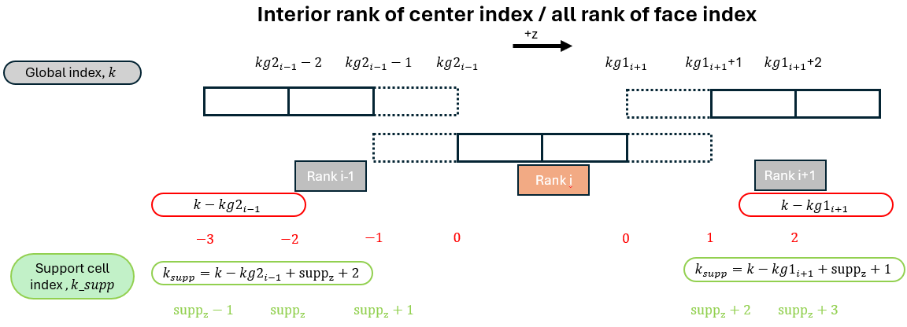
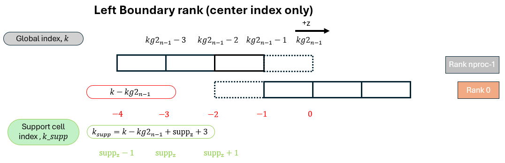
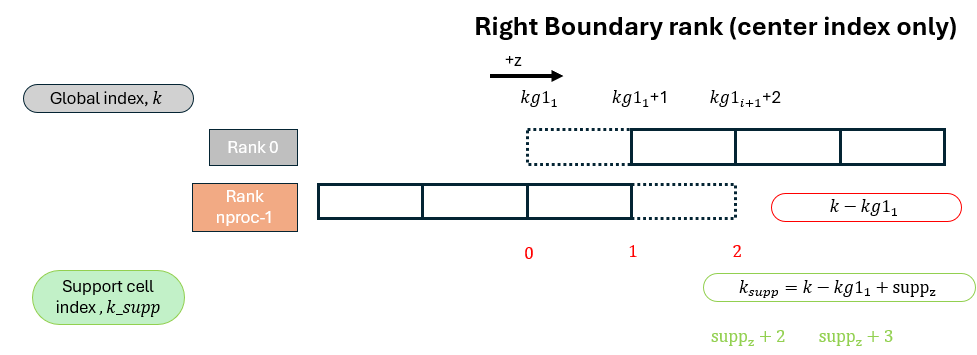

Support cell index
Support Cell Index Definition
Each IB stencil point has a global index \(k\) in the spanwise direction.
Before evaluating the interpolation or regularization operators, this global
index must be mapped to either a local index k_loc (if the point lives
on myid) or a support cell index k_sup (if the point lives on a
neighboring rank). This section documents that mapping for both face-based
(\(w\)) and center-based (\(u\), \(v\), \(c\)) variables.
The two subroutines that implement this mapping are:
global_to_local_face(k_global, k_sup, k_loc, rank)— for \(w\) (face index)global_to_local_center(k_global, k_sup, k_loc, rank)— for \(u\), \(v\), \(c\) (center index)
Both return the same three outputs:
| Output | Meaning |
|---|---|
rank |
The rank that owns k_global (myid, prev, or next) |
k_loc |
Local array index in F(:,:,k_loc) — valid only when rank == myid |
k_sup |
Support buffer index in F_supp(:,:,k_sup) — valid only when rank /= myid |
The support buffer on each rank has size 2*suppz+1 in the \(z\) direction,
storing suppz planes from the left neighbor followed by suppz+1 planes
from the right neighbor (or vice versa depending on context).
Support Buffer Layout Summary
For any rank myid, the support buffer F_supp(:,:, 1:2*suppz+1) is
organized as follows:
Index in F_supp: 1 ... suppz+1 | suppz+2 ... 2*suppz+1
◄── from left neighbor ──┤──── from right neighbor ──►
(rank prev / nprocs-1) │ (rank next / rank 0)
A global index outside the range [1, 2*suppz+1] after the mapping is a
fatal error, caught by both subroutines:
if (k_sup < 1 .or. k_sup > 2*suppz+1) stop 'Error: zi_supp out of [1..suppz*2+1]'
Case 1 — Interior Rank for center index / All rank for face index
This case applies to:
- All ranks for the face index (
global_to_local_face) - Interior ranks (
0 < myid < nprocs-1) for the center index (global_to_local_center)

For rank \(i\), the neighboring ranks are prev = i-1 and next = i+1.
A global index \(k\) belonging to the left neighbor (rank \(i-1\)) maps to:
which places it in the lower portion of the support buffer (indices \(\text{supp}_z - 1\) to \(\text{supp}_z + 1\) as shown in the schematic).
A global index \(k\) belonging to the right neighbor (rank \(i+1\)) maps to:
which places it in the upper portion of the support buffer (indices \(\text{supp}_z + 2\) to \(\text{supp}_z + 3\)).
In code:
! Left neighbor (rank == prev)
k_sup = k_global - kg2_global(prev) + suppz + 2
! Right neighbor (rank == next)
k_sup = k_global - kg1_global(next) + suppz + 1
The local index for a point owned by myid is simply:
k_loc = k_global - kg1_global(myid) + 1
k_sup = -1 ! not used
Periodic Boundary Condition and Center Index
Apart from the general interior rank case, special treatment is needed at the domain boundaries to account for the periodic boundary condition. Since the periodic condition for face-based variables (\(w\)) is handled identically to the ghost cell treatment, only the center index special cases are documented here.
The periodic boundary condition enforces the following equivalences for center-based variables (taking \(u\) as an example):
U(:,:,1) = U(:,:, nzg_global-2) ! rank 0, local k=1 ← rank nprocs-1, local k=nzg-2
U(:,:,2) = U(:,:, nzg_global-1) ! rank 0, local k=2 ← rank nprocs-1, local k=nzg-1
U(:,:,3) = U(:,:, nzg_global ) ! rank 0, local k=3 ← rank nprocs-1, local k=nzg
This means that local index k=2 on rank 0 holds the same physical value
as local index k=nzg-1 on rank nprocs-1. As a result:
- Rank
0(right neighbor to ranknprocs-1): when ranknprocs-1looks up data from rank0, the effective index must be shifted one position to the left relative to the interior formula, because the first meaningful plane of rank0starts one index later than a standard interior rank would. - Rank
nprocs-1(left neighbor to rank0): when rank0looks up data from ranknprocs-1, the effective index must be shifted one position to the right, becausek=nzg-1at ranknprocs-1is physically equivalent tok=2at rank0.
!!! note "Special treatment for k=2 and k=nzg_global-1"
The planes at global index k=2 (owned by rank 0) and
k=nzg_global-1 (owned by rank nprocs-1) require special handling
because they are periodic images of each other:
- Regularization: the contribution to these planes is computed as
if the point is interior to rank
nprocs-1. The result is then transferred to rank0and accumulated there. After the solve, the periodic boundary condition propagates the correct value back to ranknprocs-1, ensuring consistency. - Interpolation: since the velocity field already satisfies the
periodic boundary condition before the operator is applied, rank
nprocs-1can read data directly from index3+in rank0without any additional correction.
Case 2 — Right Boundary Rank Accessing Rank 0 (Periodic, Center Index Only)
This case applies to rank nprocs-1 when it needs support cell data
from rank 0 (its right neighbor under the periodic boundary condition).

In the interior formula, the support index for a right neighbor is:
However, because k=2 on rank 0 is the periodic image of k=nzg-1 on
rank nprocs-1, rank 0's effective interior starts one plane later than
a standard interior rank. The support index must therefore be shifted one
position to the left:
In code:
! Right neighbor is rank 0 — apply periodic correction
k_sup = k_global - kg1_global(next) + suppz + 1
if (rank == 0) k_sup = k_sup - 1
Case 3 — Left Boundary Rank Accessing Rank nprocs-1 (Periodic, Center Index Only)
This case applies to rank 0 when it needs support cell data from
rank nprocs-1 (its left neighbor under the periodic boundary condition).

In the interior formula, the support index for a left neighbor is:
However, because k=nzg-1 on rank nprocs-1 is the periodic image of
k=2 on rank 0, the last meaningful plane of rank nprocs-1 extends one
index further than a standard interior rank. The support index must therefore
be shifted one position to the right:
In code:
! Left neighbor is rank nprocs-1 — apply periodic correction
k_sup = k_global - kg2_global(prev) + suppz + 2
if (rank == nprocs-1) k_sup = k_sup + 1